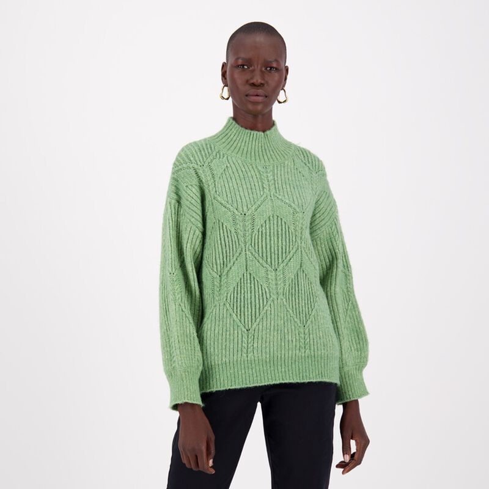
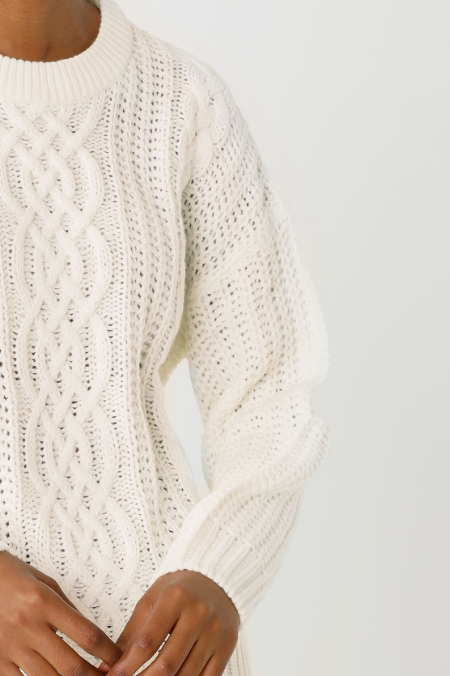
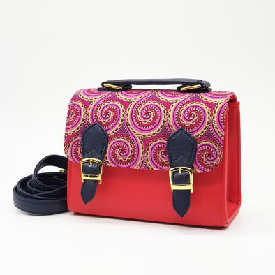
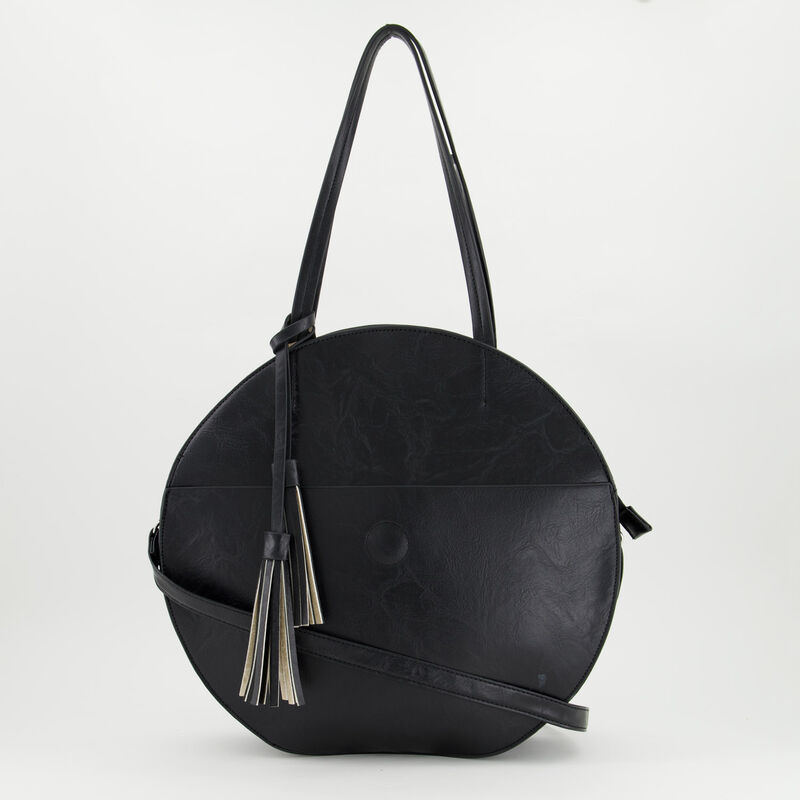
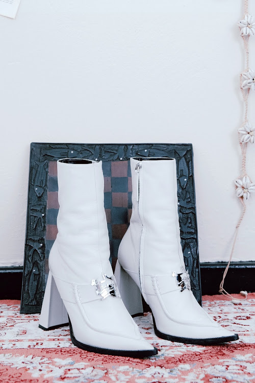

WELCOME TO MY FABULOUS WORLD!
Come along for the ride.
Hi, I'm Naledi!
My name is Naledi Chiloane. I am a Fashion blogger living in the beautiful city of Johannesburg.
From a very young age, I've always been inlove with the world of fashion. I grew up in a small village in Mpumalanga and came to the big city to study
then dropped out too follow my true passion, fashion! Follow me as I explore the exciting world of African fashion.
This months rising star: Thebe Magugu
Thebe Magugu is a young designer based in Johannesburg, South Africa, making waves both locally and internationally. He is originally from Kimberley in the Northern Cape but
moved to Johannesburg to study fashion design at the LISOF. After winning best graduate collection,
he interned and worked for a selection of designers fashion institutions and retailers.
After 2 years, he began his namesake label, THEBE MAGUGU , a South African fashion brand primarily operating within the field of women's ready to wear.
The designer says, "together with our pillar values of quality, novelty and culture, we constantly seek new ways of presenting women
with clothing that both complies with and enhances the everyday. Sleek, forward-looking design intersects with motifs from our continent's storied past,
providing smart, multifaceted clothes as valuable as their woman". He is the first South African designer to win the prestigious LVMH prize for young fashion designers in 2019 and has garnered international recognition from the likes of Vogue.
He is definitely one to watch.
Donate to the Clothes For All Foundation.
Growing up in the rural village of Mapulaneng in Mpumalanga, I didn't have much of a viewpoint on the world. My mother worked as domestic worker and was always away, leaving me in the
care of my grandmother. We were very poor and I didn't recieve many presnts or toys from them, but the one thing my mother would always bring for me when she got back were old fashion magazines
given to her by the family she worked for.
This may sound silly, but those magazins brought on a whole new outlook on the world is. I had never seen anything like them. Not only dis I fall inlive with fashion, they also made me want to go out there and live like those glamorous models.
The Clothes For All Foundations aims to expose underprivillage children to new possiblities of what they can do with their lives. We provide with fun activities in the arts of fashion design, photoraphy, drawing and other arts. Go to
Clothesforall.com to learn more on the foundation and how you can support us.
Shopping List.
Here is what I have my eye on this month!
With the winter coming up, I'm good knits to kep me warm while looking puy together.I found some great ones from Poetry and Mr Price.
I also got a great leater bag from Poetry aswell as a colourful print bag from Dr Pachanga to spice up my winter looks.
Lasty I got the limted addition THEBE MAGUGU Sunday best boots that can make any look more sophisticated and chic.




